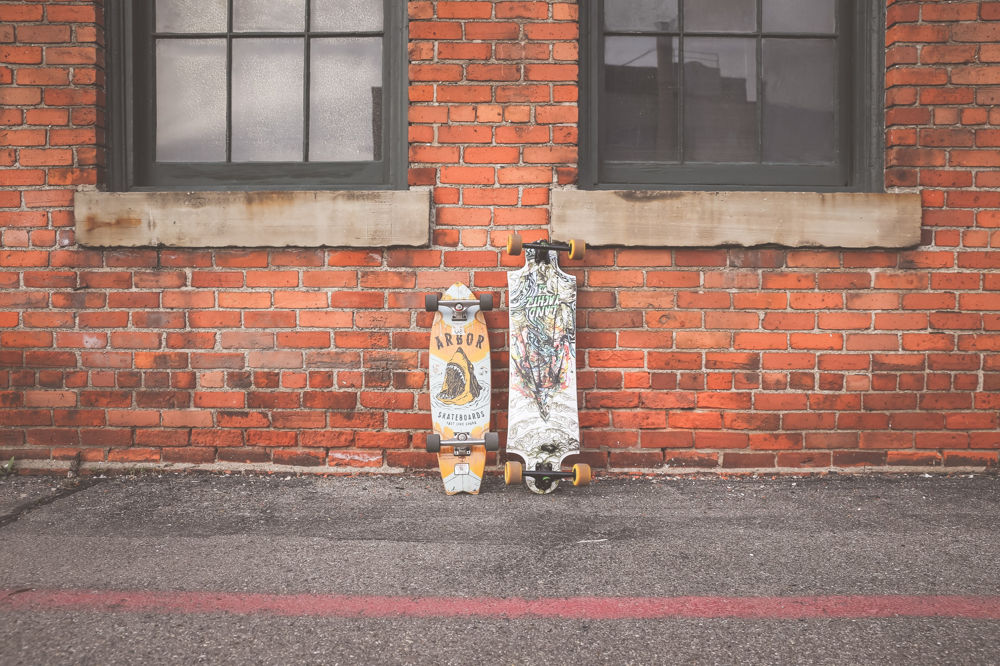
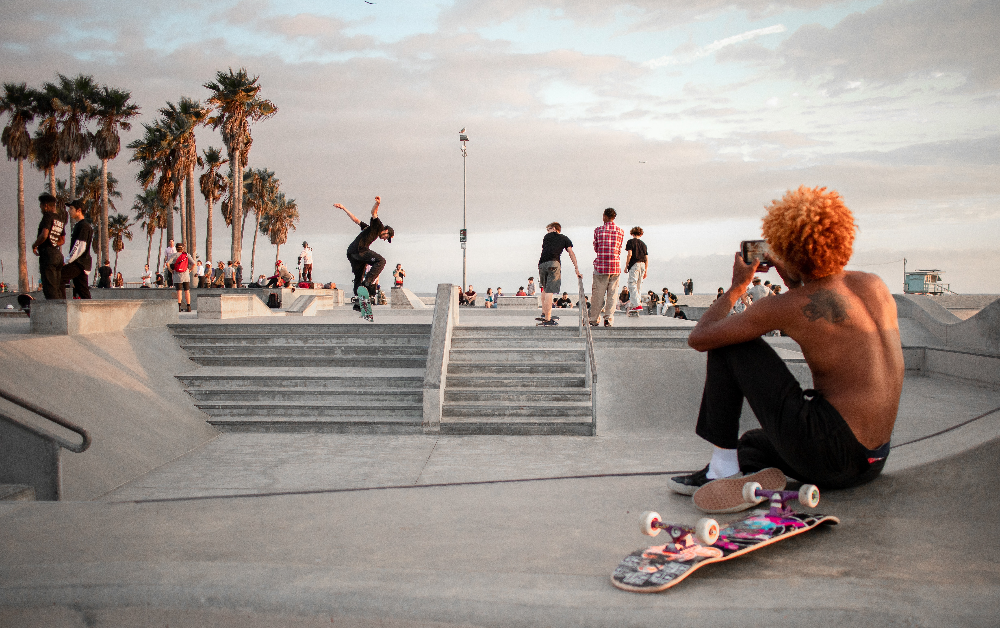

O skate surgiu na Califórnia, Estados Unidos, nos anos 60. Foi inventado por alguns surfistas, como uma brincadeira para um dia no qual não havia ondas no mar. Eles utilizaram rodinhas de patins. Já em 1965 foram fabricados os primeiros skates e realizados os primeiros campeonatos.
.jpg)
10 curiosidades sobre o skate
10. Linda Benson é uma surfista californiana nascida em 1944 e foi a primeira mulher a ser capa de uma revista especializada em surfe. Ela era bem famosa na época e, por isso, a marca Hansen's fez um skate exclusivo para ela. Foi a primeira mulher na história a ter um pro model.
9. Patti McGee começou no surfe. Quando não havia ondas, ela andava de skate. Em 1965, tornou-se a primeira mulher skatista profissional, ganhou o primeiro campeonato feminino de skate da história e, com isso, foi capa da revista “Life”.
8. Tucson, no estado americano do Arizona, tem o privilégio de ser a cidade onde se construiu o primeiro skatepark da história. Chamada de Surf City, a pista foi inaugurada em 3 de setembro de 1965 pela Arizona Surf City Enterprises, com presença de Patti McGee.
7. No Brasil, a primeira pista de skate foi inaugurada 11 anos depois, em 4 de dezembro de 1976, na praça Ricardo Xavier da Silveira, em Nova Iguaçu, no Rio de Janeiro.
6. Em 1963, na Pier Avenue de Hermosa Beach, na Califórnia, aconteceu o primeiro campeonato de skate que se tem registrado. O campeonato inovou a maneira de andar de skate, pois ali os skatistas começariam a medir suas habilidades em diferentes disciplinas, como slalom e freestyle.
5. A cultura do skate começou na Calfórnia. A modalidade foi pensada para ser o surf dos asfaltos.
4. Mais de 18 milhões de pessoas tem um skate no Estados Unidos. 85% destas pessoas são homens com menos de 18 anos e mais da metade mora na Califórnia.
3. No brasil são quase 4 milhões de skatistas; a maioria dos praticantes entre 11 e 20 anos e 10% desse número já são meninas.
2. Apesar de forte nos Estados Unidos, o Brasil arrasa nas pistas e tem um penta-campeão mundial e tri-campeão europeu de skate.
1. O skate é o 6º esporte mais popular do planeta e o 7º no brasil em relação ao número de participantes
